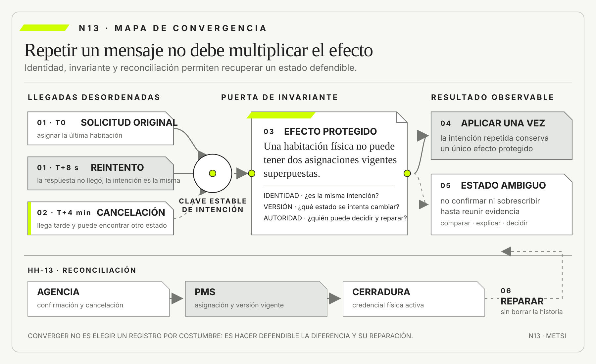

Leslie Lamport
Time, Clocks, and the Ordering of Events in a Distributed SystemCommunications of the ACM · 1978
Formuló relaciones causales para ordenar eventos sin suponer un reloj global suficiente.

En un sistema distribuido, la ausencia de respuesta no prueba ausencia de efecto ni determina un orden legítimo.
Demoras, concurrencia, consistencia, idempotencia y reconciliación
Ruta priorizada: 1 h 20 min a 1 h 40 min. Núcleo de lectura: 60 a 75 min; preparación: 20 a 25 min. Las extensiones agregan 30 a 45 min y profundizan el recorrido.

Nota. SIN NUM. identifica aparatos de orientación y referencia.
Seis referentes y las obras principales utilizadas para construir N13.
Formuló relaciones causales para ordenar eventos sin suponer un reloj global suficiente.

Desarrolló fundamentos de transacciones, recuperación y procesamiento confiable.

Formalizó condiciones de sustitución y abstracción que permiten razonar sobre garantías conservadas entre componentes.

Sistematizó implicaciones prácticas y experiencia observable de la consistencia eventual.

Mostró cómo localizar decisiones de diseño para que un cambio no propague consecuencias innecesarias.

Desarrolló fundamentos de teoría de colas para relacionar carga, espera, servicio y capacidad.
N13 no resume estas fuentes ni las convierte en receta. Las pone en tensión para construir juicio profesional.
¿Cómo sostener una transición cuando los mensajes llegan tarde, se repiten, se cruzan o fallan después de haber producido parte de sus efectos?

Cada frontera introduce demora, repetición, pérdida, reordenamiento y conocimiento parcial.
Una universidad liquida una beca extraordinaria para estudiantes que perdieron ingresos. Camila recibe una notificación: “Transferencia en proceso”. Dos minutos después, la aplicación muestra un error de conexión y ofrece el botón “Reintentar”. Camila lo presiona. Al día siguiente encuentra dos depósitos iguales en su cuenta bancaria, mientras el portal universitario todavía dice “Pago pendiente”.
Tesorería observa tres piezas. El sistema de becas conserva una orden aprobada. La pasarela registra dos solicitudes con identificadores diferentes. El banco confirma dos créditos. El portal, que actualiza su vista mediante un proceso nocturno, aún no recibió la confirmación. Cada componente ejecutó una parte razonable y, sin embargo, el resultado institucional es incorrecto.
La primera explicación culpa al botón. La segunda, a la red. La tercera, al banco. Ninguna alcanza. El primer intento llegó al proveedor y produjo el depósito, pero la respuesta se perdió. La interfaz interpretó ausencia de respuesta como ausencia de efecto. El reintento creó una intención nueva porque no conservó identidad común. El proveedor no pudo reconocer que ambos pedidos correspondían al mismo pago. El portal confundió una proyección demorada con el estado del mundo.
El equipo debe decidir qué hacer antes de discutir tecnología. ¿La segunda transferencia puede revertirse? ¿Quién asume el costo si Camila ya utilizó el dinero? ¿Qué evidencia demuestra que los dos créditos corresponden a una sola obligación? ¿Cuál es el estado que debe comunicar el portal mientras se investiga? ¿Un reintento debe repetir la operación o consultar el resultado anterior?
N12 había permitido nombrar la transición. El comando era pagar una beca aprobada; el evento esperado, pago acreditado; el estado, obligación cancelada; la evidencia, confirmación bancaria; la autoridad, Tesorería bajo la resolución correspondiente. N13 agrega una condición que N12 dejó localizada: la transición ocurre entre componentes que no comparten reloj, memoria ni destino.
El equipo introduce una clave de idempotencia asociada a la obligación, no al clic. Todo intento de pago con la misma intención utiliza esa clave. Si la respuesta se pierde, el cliente consulta el resultado antes de crear otra obligación. El proveedor conserva la relación entre clave y efecto durante una ventana definida. Tesorería monitorea intentos ambiguos y reconcilia confirmaciones del banco con obligaciones internas.
La corrección no termina ahí. Dos solicitudes iguales pueden representar intenciones distintas si cambiaron monto, destinatario o período. Una clave repetida con contenido diferente debe rechazarse y escalar. Una transferencia acreditada no puede “deshacerse” como si nunca hubiera ocurrido. Puede iniciarse una recuperación, registrar una compensación o asumir el costo. La política necesita distinguir repetición técnica de decisión nueva.
El portal también cambia. Ya no presenta “pendiente” como una verdad única. Distingue aprobación, envío, confirmación externa, conciliación y excepción. Indica hasta qué momento está actualizada la vista. Cuando existe resultado ambiguo, evita ofrecer un reintento ciego y abre una consulta.
La historia muestra una propiedad incómoda de los sistemas distribuidos: una falla puede impedir conocer si una operación ocurrió sin impedir que ocurra. Repetir mejora disponibilidad y puede duplicar efectos. Esperar certeza reduce riesgo y puede bloquear una necesidad urgente. La consistencia no es una sincronía perfecta, sino una política explícita sobre qué diferencias se toleran, durante cuánto tiempo y cómo convergen.
Esta lectura trabaja ese problema. Demora, concurrencia, consistencia, idempotencia y reconciliación no son anomalías marginales. Son dimensiones del compromiso que una organización asume cuando una transición atraviesa fronteras.
HH-12 definió “entregable” como una transición que combina inspección, reserva, asignación, acceso, evidencia y autoridad. A las 18:02 queda una sola habitación de cierta categoría. Lucía intenta asignarla a una reserva directa. Casi al mismo tiempo, una agencia envía la confirmación de otra reserva vendida minutos antes.

El PMS recibe primero el comando de Lucía y acepta. El integrador recibe después el mensaje de la agencia, pero su marca temporal es anterior. Un proceso automático reintenta porque no obtuvo respuesta. La asignación externa aparece dos veces. La vista de Comercial todavía muestra inventario porque se actualiza cada cinco minutos. Recepción ve cero disponibilidad; la agencia, una confirmación; dirección, dos ventas válidas.
No existe un orden único que resuelva por sí solo la promesa. El momento de venta, el momento de recepción, la prioridad de canal y la autoridad para comprometer inventario son criterios diferentes. La organización necesita declarar cuál protege, qué conflicto puede tolerar y cómo repara cuando dos decisiones legítimas compiten por una capacidad indivisible.
HH-13 construirá un expediente de convergencia para este episodio. Identificará intención, efectos, orden necesario, invariantes, política de reintento, clave de idempotencia, condición de conflicto, estado observable, reconciliación y reparación.
En un sistema distribuido, no recibir una respuesta no demuestra que nada haya ocurrido. Tampoco alcanza con mirar el orden aparente de los hechos para saber qué sucedió primero. Cada frontera introduce demoras, repeticiones, pérdidas, cambios de orden y conocimiento parcial. El diseño profesional debe decidir qué propiedad protege, qué diferencia acepta y cómo recupera una transición ambigua. La idempotencia permite repetir una misma intención sin multiplicar ciertos efectos, pero no elimina la concurrencia ni define cuándo dos pedidos significan lo mismo. La consistencia expresa reglas que deben conservarse y garantías que pueden observarse. No obliga a que todas las copias coincidan en todo momento. La reconciliación compara representaciones, explica diferencias y conduce el sistema hacia un estado defendible. No hay patrón gratuito. Más coordinación puede proteger invariantes y aumentar espera, dependencia y fragilidad. Menos coordinación puede mejorar disponibilidad y exigir detección de conflictos, compensaciones y comunicación de incertidumbre. La elección se justifica por consecuencia, reversibilidad, volumen, tiempo y autoridad.
La tesis se vuelve operativa al declarar qué divergencia entre fuentes puede tolerarse, durante cuánto tiempo y qué mecanismo detecta, reconcilia o compensa consecuencias incorrectas. Esa secuencia obliga a declarar qué cambia, qué permanece abierto y qué evidencia podría modificar la decisión. El rigor no proviene de agregar términos, sino de hacer reconstruible el paso entre una observación, una explicación y una acción.
Un ejemplo sencillo permite verlo: una compra aprobada en un servicio y pendiente en otro puede esperar, salvo que la diferencia libere mercadería o cobre dos veces. El caso muestra por qué una misma señal admite explicaciones e intervenciones diferentes. Antes de ampliar alcance conviene precisar población, condición de éxito y fuente de evidencia.
El límite también importa: exigir consistencia instantánea para todo o aceptar cualquier demora bajo la etiqueta vacía de consistencia eventual. Ese contraejemplo evita convertir una idea útil en receta universal. Una decisión puede ser provisional, pero debe decir qué protege ahora y cuándo volverá a examinarse.
En Hotel Horizonte, PMS, Housekeeping y cerradura conservan versiones diferentes; Lucía necesita decidir y Federico reconstruir tiempos sin borrar el episodio. El caso longitudinal obliga a sostener la misma promesa mientras cambian el modelo y la evidencia; así puede verse qué aprendió realmente el equipo.
La consecuencia profesional es preguntar qué decisión depende de cada estado y cómo se recupera; N14 recorrerá handoffs, colas y excepciones. La tesis no cierra la discusión: fija un criterio común para que el encuentro pueda comparar argumentos, producir evidencia y decidir sin ocultar incertidumbre.
Una transición distribuida converge cuando conserva la identidad de la intención, protege una invariante y reconcilia representaciones divergentes sin falsificar la historia.

N12 separó comando, evento, estado, evidencia y autoridad. HH-12 hizo explícita una transición y su reparación. N13 conserva ese vocabulario y pregunta qué ocurre cuando sus piezas viajan entre componentes autónomos.
El avance no consiste en recomendar microservicios ni mensajería. Un sistema monolítico que integra un banco, un correo o una planilla ya enfrenta distribución. Tampoco desarrolla procesos end-to-end, handoffs y colas organizacionales, que pertenecen a N14. Aquí se analiza la confiabilidad de una transición concreta bajo demora, repetición, competencia y falla parcial.
El producto será HH-13, expediente de convergencia. Recibe una transición de HH-12 y documenta qué puede llegar tarde, duplicado o en conflicto; qué invariante importa; qué garantías se ofrecen; y cómo se detecta, reconcilia y repara una divergencia.
En simple, con un ejemplo: En una llamada local, un error suele parecer completo: la función devuelve o falla. Entre sistemas, al menos tres momentos pueden separarse. La solicitud puede no llegar. Puede llegar y no ejecutarse. Puede ejecutarse y perderse la respuesta. Desde el cliente, los últimos dos casos pueden verse iguales.
Esta ambigüedad cambia el razonamiento. Si pagar una beca es inocuo al repetirse, se puede reintentar. Si el efecto es irreversible o costoso, repetir a ciegas es peligroso. Esperar indefinidamente tampoco resuelve: la persona necesita información y la organización, un criterio de escalamiento.
El estado “resultado desconocido” debe poder representarse. No equivale a pendiente, rechazado ni aceptado. Indica que existe una intención registrada y evidencia insuficiente sobre su efecto. Su tratamiento puede incluir consulta, espera, reconciliación o intervención humana.
La evidencia que fortalece una explicación es la combinación de identificador estable, registro de envío, recepción del proveedor y efecto externo. Un registro local sólo demuestra que el cliente intentó. Una confirmación bancaria sin vínculo con la obligación demuestra un crédito, no su causa.
En simple: Toda comunicación demora. La pregunta útil no es si existe latencia, sino qué demora cambia una decisión. Cien milisegundos pueden ser irrelevantes para un reporte y críticos para una puja. Cinco minutos pueden ser aceptables para analítica y dañinos para inventario escaso.
Ejemplo cercano: El presupuesto de tiempo distribuye una expectativa entre captura, transporte, procesamiento, actualización y presentación. Permite identificar qué parte consume margen y cuándo una vista debe declarar obsolescencia. También evita llamar “tiempo real” a una cadena cuyo dato más lento se renueva cada noche.
Un timeout no prueba que el servicio falló. Declara que quien esperaba dejó de esperar bajo cierta política. Debe conducir a una decisión: cancelar, consultar, reintentar, degradar o escalar. Reintentos anidados pueden multiplicar carga y empeorar una saturación. La guía de Microsoft sobre el patrón Retry insiste en clasificar fallas transitorias y limitar intentos dentro del contexto completo.
En Hotel Horizonte, el presupuesto para impedir doble asignación debe ser más exigente que el de un tablero semanal. El nivel se define por la consecuencia, no por una preferencia tecnológica general.
En simple, con un ejemplo: Una infraestructura puede entregar un mensaje como máximo una vez, al menos una vez o con mecanismos que aproximan una entrega única dentro de un alcance. Ninguna etiqueta garantiza por sí sola que el efecto de negocio ocurra exactamente una vez.
“Como máximo una vez” evita duplicación en transporte y puede perder la operación. “Al menos una vez” reduce pérdida mediante repetición y obliga a tolerar duplicados. “Exactamente una vez” depende de fronteras, almacenamiento, versión y efecto externo. Un correo, una transferencia o una puerta abierta pueden quedar fuera de la garantía de una plataforma.
La pregunta debe trasladarse del mensaje al efecto. ¿Puede repetirse la reserva sin crear otra? ¿Puede enviarse dos veces el correo sin duplicar la promesa? ¿Qué parte está protegida por transacción y cuál requiere deduplicación o reconciliación?
El identificador del mensaje no alcanza si cada reintento crea uno nuevo. Se necesita identidad de intención. Tampoco alcanza conservar el mismo identificador para siempre: una solicitud legítima posterior puede coincidir en datos y representar otra decisión.
En simple: Leslie Lamport mostró que los sistemas distribuidos necesitan razonar sobre relaciones causales y no sólo sobre relojes. Si una aprobación responde a una solicitud, la solicitud debe precederla causalmente aunque las marcas horarias estén desajustadas. Dos asignaciones independientes pueden ser concurrentes aunque una llegue primero.
Ejemplo cercano: Ordenar por recepción es útil para procesar, pero no siempre para decidir. Ordenar por tiempo declarado puede ser manipulado o impreciso. Un número de versión protege una entidad contra actualizaciones basadas en estado obsoleto. Un vector causal aporta más información y también más costo.
El modelo debe conservar sólo el orden que cambia el resultado. Enviar un epígrafe antes o después de una imagen puede ser conmutativo. Asignar una última habitación y confirmar una reserva no lo es. La coordinación se reserva para invariantes que realmente lo requieren.
Una secuencia total puede incluso fabricar causalidad. Si el PMS enumera por recepción, el mensaje tardío de la agencia aparece después de la asignación de Lucía aunque corresponda a una venta anterior. Eso no decide prioridad, pero permite formular el conflicto correctamente. La prioridad debe provenir de una regla reconocida, como aceptación confirmada, reserva temporal vigente o canal contractual, y no del azar de la red.
La prueba consiste en invertir artificialmente el orden de llegada. Si el resultado legítimo debería mantenerse, la lógica no puede depender de la recepción. Si debe cambiar, el equipo necesita justificar qué información volvió diferente a la segunda decisión.
En simple: Concurrencia no significa simplemente velocidad. Existe cuando dos operaciones se superponen sin conocer completamente el resultado de la otra. Cada una puede ser válida sobre el estado que leyó y, combinadas, violar una invariante.
Ejemplo cercano: Dos agentes consultan una habitación libre y luego intentan asignarla. Un control optimista compara la versión leída con la vigente y rechaza una escritura obsoleta. Un bloqueo pesimista reserva capacidad antes de decidir y puede aumentar espera o producir abandono. Una operación atómica sobre inventario puede proteger el recurso sin bloquear todo el proceso.
La evidencia para elegir mecanismo incluye frecuencia de conflicto, costo del error, reversibilidad, duración de la reserva y carga. Si el conflicto es raro y reparable, el control optimista puede ser suficiente. Si implica medicación duplicada, dinero o acceso físico, la invariante exige protección más fuerte.
También se debe distinguir competencia real de actualización independiente. Dos personas pueden editar campos que no interfieren y el sistema rechazar a una porque compara la versión completa. Ese falso conflicto traslada trabajo de resolución sin proteger mejor la promesa. La granularidad del control debe corresponder a la invariante.
Cuando el sistema elige un ganador necesita producir evidencia para quien pierde. “Intente nuevamente” oculta si cambió inventario, autoridad o regla. Un rechazo explicable permite buscar alternativa sin convertir la concurrencia en error misterioso.
El equipo de Hotel Horizonte dibuja la transición de HH-12 y marca cinco fronteras: agencia a integrador, integrador a PMS, PMS a inventario, PMS a cerradura y PMS a Comercial. En cada una registra demora esperada, timeout, política de reintento y evidencia disponible.
Descubre que el integrador reintenta toda confirmación sin conservar una clave de intención. El PMS deduplica por identificador de mensaje, que cambia en cada intento. Comercial actualiza una copia cada cinco minutos y no muestra su antigüedad. La cerradura recibe asignaciones, pero una cancelación tardía puede invalidar una credencial ya emitida.
La explicación “la agencia duplicó” resulta insuficiente. El sistema completo convirtió repetición esperable en doble efecto. HH-13 reformula el problema: falta identidad de intención, control de versión sobre inventario y una política explícita de estado desconocido.
El equipo reproduce el episodio con cuatro perturbaciones. Pierde la respuesta del PMS, duplica el mensaje, demora la cancelación y ejecuta dos asignaciones sobre la misma versión. Comprueba que el primer caso genera reintento inseguro, el segundo crea dos registros, el tercero mantiene una credencial y el cuarto acepta dos promesas antes de actualizar la vista.
La prueba separa causas que el incidente original mezclaba. No se corrige con una única bandera. Se necesita identidad en el reintento, exclusión sobre la unidad, revocación trazable y frescura visible. HH-13 transforma un relato de “inconsistencia” en cuatro decisiones verificables.
En simple: Consistencia puede significar varias cosas. En una base transaccional refiere a reglas observadas por operaciones. Entre réplicas puede referir a qué resultados ve una lectura después de una escritura. En el negocio significa que ciertas afirmaciones no pueden ser simultáneamente válidas.

Ejemplo cercano: “La habitación no se asigna a dos reservas vigentes” es una invariante. “Todos los tableros muestran el mismo número inmediatamente” puede ser innecesario. Proteger ambas con la misma coordinación agrega costo sin igualar beneficio.
Werner Vogels describió la consistencia eventual como una garantía de convergencia cuando dejan de llegar actualizaciones, no como permiso para cualquier divergencia. Martin Kleppmann muestra que los modelos de consistencia deben explicarse desde las anomalías que permiten y las garantías que ofrecen a quien usa el sistema.
El equipo debe declarar alcance, ventana y observador. Una vista puede ser monotónica para una persona, conservar sus propias escrituras o permitir lecturas antiguas. El rótulo “eventual” sin límite, señal de frescura ni reparación es una omisión de diseño.
En simple, con un ejemplo: Una garantía sólo resulta evaluable cuando se identifica quién observa, qué operación intenta realizar y durante cuánto tiempo la divergencia puede conservarse. La frase “el sistema es consistente” reúne preguntas diferentes. Recepción necesita saber si puede asignar una habitación; Comercial, si puede prometer una categoría; el huésped, si la confirmación continúa vigente; conciliación, si todos los registros terminarán reflejando una reparación.
Una misma arquitectura puede ofrecer garantías distintas a cada observador sin ser incoherente, siempre que esas diferencias estén declaradas y no habiliten acciones incompatibles.
HH-13 organiza esas relaciones en una matriz. Cada fila contiene actor, decisión, dato observado, antigüedad máxima aceptable, invariante protegida y conducta ante incertidumbre. Para Lucía Ferreyra, una lectura de inventario con varios minutos de antigüedad puede servir para orientar una consulta, pero no para confirmar la última unidad física. Para Camila Duarte, una proyección demorada puede ser suficiente para analizar demanda y no para publicar disponibilidad inmediata.
Para el integrador, recibir un mensaje no demuestra que el PMS haya comprometido la asignación. El significado depende de la acción que la observación pretende autorizar.
La ventana no se define sólo con latencia promedio. Debe incluir el extremo que todavía permite cumplir la promesa, la forma de advertir antigüedad y la respuesta cuando el plazo se supera. Una vista que converge en diez minutos puede ser adecuada para planificación diaria y peligrosa durante un arribo previsto en cinco. El límite también puede variar por población o consecuencia. Una preferencia de almohada tolera una demora que no resulta aceptable para revocar una credencial o proteger una habitación accesible.
La matriz obliga a separar tres propiedades. La primera es la garantía técnica, como lectura de las propias escrituras, orden causal o convergencia en ausencia de nuevas actualizaciones. La segunda es la regla institucional que decide qué acción puede realizarse con esa garantía. La tercera es el control operacional que hace visible incumplimiento, detiene una acción o inicia reparación. Observabilidad y política de excepción no redefinen la consistencia eventual. Vuelven gobernable su uso dentro de un servicio concreto.
La prueba recorre una misma versión desde varios puntos. Se confirma una reserva, se demora la proyección comercial y se consulta el PMS desde Recepción. El equipo registra qué ve cada actor, qué sabe sobre la frescura y qué acción queda disponible. Luego repite el ejercicio con una cancelación y una respuesta perdida. Si alguien puede convertir una lectura antigua en una nueva promesa sin advertencia, la matriz descubre una brecha entre garantía y autoridad aunque todas las réplicas converjan después.
El resultado no es imponer la vista más fuerte a todo el sistema. Es localizar dónde coordinar, dónde informar incertidumbre y dónde aceptar convergencia posterior. La garantía mínima defendible es la que protege la invariante y permite reparar dentro de la ventana comprometida sin presentar una observación parcial como certeza compartida.
En simple: Coordinar obliga a esperar comunicación o autoridad compartida. Puede proteger una decisión y también volverla inaccesible durante una partición o una caída. Evitar coordinación mejora continuidad y exige que ciertas operaciones sean conmutativas, monotónicas o reconciliables.
Ejemplo cercano: Peter Bailis y colaboradores mostraron que algunas invariantes pueden preservarse sin coordinación si las operaciones son compatibles con ellas. La lección no es eliminar coordinación, sino localizarla. Un contador de visualizaciones admite suma distribuida. La última habitación disponible no admite dos compromisos independientes sin política adicional.
La decisión combina cuatro preguntas: ¿qué daño produce una divergencia?, ¿cuánto dura?, ¿puede detectarse?, ¿puede repararse? Para una preferencia de interfaz puede aceptarse convergencia tardía. Para una revocación de acceso, la demora necesita límite estricto y modo seguro.
La disponibilidad tampoco es un valor abstracto. Mantener una pantalla operativa que promete inventario inexistente no sostiene el servicio. A veces degradar, informar incertidumbre o suspender una acción conserva mejor la promesa que continuar con datos antiguos.
En simple, con un ejemplo: Una operación idempotente produce, respecto de la propiedad elegida, el mismo resultado observable aunque se procese varias veces con la misma intención. RFC 9110 define métodos HTTP idempotentes por el efecto pretendido de múltiples solicitudes idénticas. Esa semántica de protocolo no vuelve idempotente cualquier proceso interno o efecto externo.
Cancelar dos veces una reserva puede dejarla cancelada una sola vez y enviar dos devoluciones. Actualizar un domicilio al mismo valor puede ser idempotente sobre el dato y no sobre notificaciones o auditoría. La propiedad debe nombrar el efecto protegido.
AWS propone claves de solicitud para hacer seguros los reintentos y advierte sobre el caso de la misma clave con intención diferente. La clave debe estar vinculada a actor, operación y parámetros relevantes; conservar resultado; tener una ventana compatible con retrasos; y rechazar colisiones semánticas.
La idempotencia no borra cada intento. Conserva que hubo repetición, devuelve un resultado coherente y evita duplicar el compromiso. La observabilidad necesita contar intentos sin confundirlos con efectos.
En simple, con un ejemplo: Deduplicar compara piezas para decidir si representan la misma intención. Igualdad de contenido no alcanza: dos compras idénticas pueden ser legítimas. Igualdad de mensaje tampoco alcanza: el productor puede crear otro identificador al reintentar.
Una clave adecuada suele nacer donde se conoce la intención y atravesar las fronteras que pueden repetirla. Para la beca, identifica obligación, beneficiaria y período. Para la habitación, identifica la decisión de confirmar una reserva, no toda consulta de disponibilidad.
La retención de claves es una decisión. Si vence antes de que llegue un mensaje tardío, el efecto puede duplicarse. Si nunca vence, puede impedir operaciones futuras legítimas y acumular datos. La ventana se relaciona con demora máxima, derecho a reclamo y ciclo de vida de la obligación.
La evidencia que debilita una política es encontrar duplicados fuera de ventana, claves reutilizadas con parámetros distintos o efectos secundarios no cubiertos. La prueba debe incluir reintento inmediato, tardío, concurrente y posterior a una respuesta ambigua.
La respuesta ante una clave conocida también forma parte del contrato. No conviene ejecutar nuevamente ni responder un éxito genérico: debe recuperarse el resultado original o indicar que sigue en proceso. Así el cliente puede distinguir una operación reconocida de una petición nueva y conservar el mismo episodio.
En simple: El control optimista permite avanzar y verifica al comprometer que el estado leído sigue vigente. Funciona bien cuando los conflictos son poco frecuentes y el rechazo puede resolverse. Su costo aparece en trabajo descartado y experiencia de quien debe reintentar.
Ejemplo cercano: El bloqueo pesimista reserva el recurso antes del cambio. Reduce ciertos conflictos y aumenta contención, riesgo de espera y necesidad de vencimiento. Una reserva temporal de inventario puede ser razonable si es visible, acotada y liberable.
Las operaciones conmutativas reducen la necesidad de orden. Agregar etiquetas diferentes a un conjunto puede converger sin decidir cuál fue primero. Asignar una unidad indivisible no. Rediseñar la operación puede convertir conflicto en acumulación: registrar demandas y adjudicar luego bajo una autoridad común, por ejemplo.
No existe mecanismo universal. El artefacto debe explicar qué anomalía evita, qué rechazos introduce y cómo se repara una operación que pierde la carrera.
Jim Gray y Andreas Reuter organizaron los fundamentos de procesamiento transaccional alrededor de atomicidad, consistencia, aislamiento y durabilidad, junto con recuperación. Esas propiedades siguen siendo decisivas dentro de una frontera controlada. El problema aparece al suponer que alcanzan automáticamente a un banco, una persona o un dispositivo que ya produjo un efecto.
Pat Helland señaló que los procesos que exceden una transacción necesitan identidad, mensajes y actividades capaces de continuar durante períodos extensos. La enseñanza para N13 es conservar transacciones locales donde protegen invariantes y diseñar explícitamente lo que ocurre entre ellas. Renunciar a una transacción global no equivale a renunciar a corrección.
Barbara Liskov y Jeannette Wing muestran que una sustitución es segura sólo cuando conserva las propiedades que quienes consumen la abstracción tienen derecho a esperar. David Parnas aporta el ocultamiento de decisiones como forma de contener cambios, no de ocultar contratos. Leonard Kleinrock permite leer espera, carga y capacidad como relaciones cuantificables. Juntas, estas contribuciones obligan a declarar qué garantía cruza una frontera, qué decisión permanece local y qué demora vuelve inválida una promesa.
Hotel Horizonte define una invariante: una unidad física no puede sostener dos asignaciones vigentes para intervalos superpuestos. Comercial puede sobre-vender categorías bajo una política separada, pero la asignación concreta exige exclusión.
El PMS implementa una versión sobre la unidad y acepta el comando sólo si coincide con la versión leída. La agencia conserva una clave de intención para que el reintento recupere el resultado anterior. El integrador rechaza la misma clave con otra reserva o fechas distintas. Comercial muestra inventario con momento de actualización y deja de presentar una copia vencida como confirmación.
La operación que pierde la carrera no desaparece. Produce “asignación rechazada por conflicto” y activa una alternativa: otra unidad, otra categoría, espera o reparación comercial. Así, consistencia técnica y promesa institucional quedan conectadas.
El equipo mide dos resultados. La doble asignación debe caer a cero dentro del alcance protegido. Las ventas que requieren reparación pueden continuar porque nacen antes de la asignación física; ahora quedan detectadas antes del arribo y con responsable. Si sólo se midiera consistencia del PMS, el segundo problema parecería resuelto aunque el huésped siguiera absorbiendo el costo.
También se registra el tiempo durante el cual Comercial ve una copia antigua. Reducirlo tiene costo. El hotel compara ese costo con sobreventas, consultas manuales y compensaciones. La política de actualización se vuelve una decisión económica y de servicio, no una aspiración abstracta de instantaneidad.
En simple: Reconciliar no es copiar el valor de un sistema sobre otro. Es comparar representaciones relacionadas, clasificar diferencias, reunir evidencia y decidir qué transición conduce a un estado defendible.
Una diferencia puede deberse a demora esperada, pérdida, duplicación, regla distinta, identidad mal vinculada, corrección legítima o fraude. Sobrescribir antes de clasificar elimina evidencia. Dejar toda diferencia abierta convierte la excepción en deuda operacional.
Ejemplo cercano: La reconciliación necesita frecuencia, umbral, responsable, autoridad y plazo. Algunas divergencias se resuelven automáticamente porque existe fuente y regla claras. Otras requieren revisión porque hay obligaciones o daño. El resultado debe registrar explicación y efecto, no sólo “conciliado”.
El diseño comienza por un inventario de pares comparables. No tiene sentido conciliar “estado de reserva” con “estado de pago” como si fueran el mismo atributo. Se vinculan porque una regla puede depender de ambos. Cada comparación declara entidad, período, transformación y tolerancia. HH-11 reaparece como disciplina de evidencia, no como repetición temática.
Luego se construye una taxonomía de diferencias. Una demora dentro de ventana puede observarse sin intervenir. Un duplicado con la misma clave puede cerrarse automáticamente. Dos intenciones incompatibles exigen autoridad. Una diferencia de monto puede indicar conversión, cargo o error. Clasificar antes de actuar evita que una rutina de sincronización convierta excepciones legítimas en datos supuestamente limpios.
La reconciliación también produce información de mejora. Si las mismas divergencias reaparecen, el problema no es sólo una cola pendiente. Puede haber semántica distinta, frontera mal ubicada o regla que ninguna parte conoce completa. El indicador útil no es únicamente cantidad conciliada, sino recurrencia, edad, causa y costo de reparación.
En simple, con un ejemplo: Cuando una operación tiene varios pasos y uno falla, no siempre existe un botón capaz de volver todo atrás. Una saga coordina esos pasos y una compensación repara lo posible; por ejemplo, cancelar una reserva y devolver el pago no borra el mensaje que ya recibió la persona. Cuando una transición cruza componentes con transacciones locales, no siempre puede revertirse de manera atómica. Una saga coordina una secuencia de pasos y define acciones compensatorias si no puede continuar. Puede utilizar coreografía entre participantes u orquestación mediante un coordinador.
La guía actual del Azure Architecture Center advierte que las compensaciones no recrean necesariamente el estado inicial, pueden fallar y requieren seguimiento. Un reembolso no elimina la comunicación enviada; una reasignación no borra la espera. Deben distinguirse pasos compensables, reintentables e irreversibles.
La compensación no debe automatizar una decisión que corresponde a la persona afectada. Cancelar todos los servicios puede ser técnicamente sencillo y peor que ofrecer una alternativa. Autoridad, evidencia y consecuencia de N12 siguen vigentes.
Una saga por coreografía distribuye reacción entre participantes. Reduce un coordinador central y puede volver difícil comprender el recorrido cuando crece. Una saga orquestada hace visible el estado del proceso y concentra lógica y dependencia. La elección depende de complejidad, autonomía y necesidad de supervisión, no de una preferencia universal.
Cada paso debe declarar si es reintentable, compensable o irreversible. Emitir una credencial puede revocarse; revelar información no. Enviar un mensaje puede compensarse con otro, pero no retirarse de la memoria de quien lo recibió. El punto de no retorno debe ubicarse después de validaciones críticas cuando sea posible.
Las compensaciones también fallan y pueden repetirse. Necesitan su propia idempotencia, evidencia y escalamiento. Una arquitectura que modela el camino de avance con precisión y deja la reparación como intervención manual sin contexto sólo desplazó la falla.
HH-13 organiza una transición distribuida mediante diez decisiones:
El expediente obliga a declarar propiedades desde la promesa. “Usamos una cola” no responde qué ocurre si entrega dos veces. “Tenemos transacciones” no explica efectos externos. “La base es consistente” no garantiza que el huésped y Recepción observen una situación compatible.
En simple, con un ejemplo: Cerrar una reconciliación no equivale a conseguir que dos campos terminen con el mismo valor. El cierre debe demostrar que las diferencias relevantes fueron explicadas, que las obligaciones incompatibles recibieron tratamiento y que ninguna reparación pendiente quedó oculta por la convergencia técnica. Dos sistemas pueden mostrar “cancelada” y todavía existir una credencial activa, un cobro sin devolver o una persona que conserva una confirmación válida desde su perspectiva.
La prueba comienza con una fotografía versionada de las representaciones comparadas. Para cada una se conserva entidad, período, regla de transformación, momento de conocimiento y autoridad que puede modificarla. Luego se clasifica la divergencia y se registra si el efecto observado es reversible, compensable o irreversible. Esta distinción impide usar una actualización de datos como sustituto de reparación. Borrar una asignación duplicada no informa al huésped; revocar una credencial no compensa una espera; devolver dinero no elimina una divulgación.
El expediente de cierre contiene cuatro evidencias. La primera muestra cuál fue la explicación aceptada y qué explicaciones rivales se descartaron. La segunda demuestra que la invariante vuelve a cumplirse dentro del alcance declarado. La tercera verifica que cada efecto externo tenga resolución, responsable y plazo. La cuarta confirma que un nuevo mensaje tardío o un reintento no reabra silenciosamente el conflicto. Si falta una de ellas, la divergencia puede estar contenida, pero no cerrada.
Hotel Horizonte aplica el criterio a una confirmación duplicada. El PMS conserva una sola asignación y la agencia mantiene dos mensajes enviados. La conciliación vincula ambos mensajes con una intención, identifica cuál generó la promesa adicional y registra la alternativa ofrecida. Después demora deliberadamente una copia anterior de la confirmación. La prueba sólo concluye cuando esa copia se reconoce como historia, no reactiva inventario ni vuelve a emitir una credencial. La convergencia debe sobrevivir al dato rezagado que originó el problema.
La autoridad de cierre depende de la consecuencia. Una diferencia puramente informativa puede cerrarse mediante una regla automática comprobada. Un compromiso comercial, un pago o una revocación de acceso exige que el rol responsable pueda revisar evidencia y aceptar el riesgo residual. El sistema registra quién cerró, bajo qué criterio y qué señal obligaría a reabrir. “Conciliado” deja de ser una marca administrativa y se convierte en una afirmación auditable.
También se prueba la autonomía de la reparación. Otra persona, sin recurrir a quien diseñó la integración, debe reconstruir el episodio y ejecutar el camino previsto. Si necesita consultar mensajes privados, interpretar códigos no documentados o pedir acceso extraordinario, la capacidad de reconciliar todavía depende de conocimiento informal. La prueba revela entonces una deuda operacional aunque el caso particular haya terminado.
Esta forma de cierre conserva aprendizaje sin trasladar a N14 el análisis del proceso completo. N13 se limita a demostrar que una transición distribuida puede recuperar un estado defendible, explicar sus efectos y resistir mensajes tardíos. N14 utilizará esa evidencia para estudiar cómo múltiples transiciones, esperas y responsabilidades componen el servicio de principio a fin.
En simple, con un ejemplo: La transición se prueba introduciendo fallas controladas: respuesta perdida después del efecto, mensaje duplicado, entrega tardía, dos comandos concurrentes, lectura antigua, consumidor detenido, clave repetida con parámetros distintos y compensación fallida.
Para cada perturbación se registra resultado, evidencia visible, invariante, experiencia de la persona y camino de reparación. La prueba pasa cuando el sistema evita el efecto prohibido o lo detecta dentro del plazo y conduce a una reparación autorizada.
El objetivo no es demostrar ausencia de fallas. Es mostrar que una falla esperable no se convierte silenciosamente en promesa falsa. Las métricas incluyen ambigüedades abiertas, edad de divergencias, duplicados evitados, conflictos detectados y reparaciones manuales.
La prueba debe observar desde afuera y desde adentro. Internamente verifica claves, versiones y eventos. Externamente verifica qué ve y qué puede hacer la persona. Un sistema puede conservar la invariante y mostrar durante horas una confirmación errónea. La calidad incluye esa representación.
Ross, R., McEvilley, M. y Winstead, M. tratan en NIST SP 800-160 Volumen 1 Revisión 1 la confiabilidad y la seguridad como propiedades emergentes de sistemas, sostenidas a lo largo de ingeniería y ciclo de vida. La perturbación sigue ese enfoque: prueba relaciones, dependencias y recuperación, no sólo funciones aisladas.
El episodio de la última habitación deja cuatro estados: PMS asignó a la reserva directa; agencia confirmó la externa; cerradura emitió una credencial; Comercial mostró capacidad. El equipo no declara al PMS “fuente única de verdad” y descarta lo demás. Cada pieza representa una obligación diferente.
HH-13 clasifica la divergencia. La asignación física queda protegida por versión. La confirmación de agencia es una promesa comercial que exige alternativa o compensación. La credencial debe revocarse si no corresponde a la asignación vigente. La vista comercial debe actualizarse y registrar la ventana que permitió vender.
La reconciliación produce tres eventos: asignación externa rechazada por conflicto, alternativa ofrecida y credencial anterior revocada. Dirección conserva el costo de reparación como evidencia para revisar prioridad de canal y frecuencia de actualización.
El sistema converge, pero no oculta que existieron dos compromisos. La verdad operacional incluye el estado final y el recorrido que generó obligación.
En la revisión semanal, el equipo encuentra que seis de ocho conflictos nacieron en una ventana específica de actualización de la agencia. Podría reducir la ventana, reservar capacidad por canal o cambiar la promesa externa. Cada alternativa distribuye costo y riesgo de manera distinta. HH-13 no elige automáticamente; ofrece evidencia para decidir.
La solución adoptada combina una reserva temporal corta, control de versión al asignar y conciliación anticipada de confirmaciones sin respuesta. Se establece además un umbral: toda divergencia con llegada prevista en menos de veinticuatro horas requiere revisión humana dentro de treinta minutos. La política convierte la convergencia en responsabilidad operativa.
Una médica prescribe una dosis. La red se interrumpe después de enviar la orden y la aplicación permite reintentar. Si cada intento crea una orden independiente, enfermería puede recibir dos tareas válidas. Deduplicar sólo por paciente y medicamento también sería peligroso: dos dosis iguales pueden corresponder a horarios distintos.
La identidad de intención combina orden clínica, dosis, vía y ventana. El sistema recupera el resultado del primer intento. La administración efectiva utiliza otra identidad y otra autoridad. Una lectura antigua del plan no debe autorizar una dosis revocada.
La invariante clínica y la política de frescura requieren conocimiento especializado. N13 no prescribe tratamiento. Transfiere el método: localizar efecto protegido, identidad, concurrencia, evidencia, estado ambiguo y reconciliación.
El caso vuelve visible un límite: la idempotencia técnica reduce la duplicación y no reemplaza el juicio. Si la intención clínica cambió, repetir una clave vieja puede ser tan dañino como crear una nueva sin control.
La prueba incluye revocar la orden mientras una estación está desconectada. Al reconectarse, la estación no debe ejecutar la versión antigua sin verificar vigencia. Esto no se resuelve deduplicando: exige una garantía sobre lectura y autoridad clínica. La transferencia demuestra que cada propiedad protege una pregunta diferente.
También muestra por qué el estado ambiguo debe ser visible. Si no se sabe si la dosis fue administrada, repetir puede dañar y omitir también. La interfaz debe conducir a verificación y escalamiento, no elegir por defecto una acción irreversible.
Una biblioteca pequeña centraliza préstamos en una única base transaccional dentro de una red estable. Para “modernizar”, distribuye catálogo, socios, reservas y multas en servicios independientes. Cada préstamo inicia una saga, varias colas y reconciliaciones nocturnas.
El nuevo diseño tolera fallas que el contexto casi no tenía y crea demoras, estados intermedios y soporte especializado. La invariante principal podía protegerse con una transacción local. La distribución no mejoró una decisión ni una promesa.
El contraejemplo limita la tesis: no toda organización necesita consistencia eventual, sagas o claves cruzando múltiples servicios. La respuesta más robusta puede ser reducir fronteras. Modelar la falla no obliga a fabricarla.
El equipo vuelve a una frontera transaccional para préstamo y devolución, y mantiene integración asincrónica sólo para notificaciones y analítica. El cambio reduce estados intermedios y conserva la capacidad que realmente importaba. No es una regresión tecnológica, sino una adecuación entre arquitectura y decisión.
Existe un contraejemplo inverso. Una red de bibliotecas con sedes desconectadas puede necesitar operación local y reconciliación porque esperar conectividad impediría prestar. La misma promesa cambia con el contexto. N13 no califica tecnologías por modernidad; compara consecuencias bajo fallas reales.
El timeout termina una espera, no demuestra el resultado. Debe abrir consulta o estado ambiguo antes de repetir un efecto sensible.
Una plataforma puede deduplicar mensajes dentro de su frontera y no controlar correo, banco o dispositivo físico.
La repetición deja de reconocerse como la misma intención y puede multiplicar efectos.
El estado final puede coincidir mientras se repiten pagos, notificaciones, puntos o reservas.
La consistencia eventual garantiza convergencia cuando cesan las actualizaciones. Usarla de manera defendible requiere, además, observabilidad, una ventana explícita y una política de excepción; ninguna de ellas autoriza espera indefinida.
Bloquear cada lectura y escritura protege propiedades irrelevantes, aumenta latencia y amplía puntos de falla.
Elegir un valor por jerarquía técnica puede borrar obligaciones, evidencia y causas diferentes.
La acción inversa no elimina tiempo, comunicación, daño ni responsabilidad. La reparación debe declarar límites.
Reintentos anidados pueden sostener una sobrecarga y prolongar una falla. Se necesitan límites, espera y escalamiento.


Las garantías fuertes cuestan coordinación, pero el costo no siempre justifica reducirlas.
La confiabilidad no pertenece sólo a infraestructura. Producto define qué comunica durante la incertidumbre. Análisis identifica invariantes y equivalencia semántica. Desarrollo implementa claves, versiones y transacciones. Operaciones observa divergencias y conduce reconciliaciones. Seguridad protege autoridad y evidencia. Dirección decide qué daño se tolera y cómo se repara.
Un equipo profesional puede responder qué ocurre si una respuesta se pierde después del efecto, si un mensaje llega dos veces, si dos decisiones compiten y si una compensación falla. También puede explicar por qué eligió coordinar una transición y dejar converger otra.
La calidad se mide por la promesa sostenida. Disponibilidad sin verdad puede ser una pantalla operativa que perjudica. Consistencia sin acceso puede impedir el servicio. N13 convierte esa tensión en decisiones verificables.
La documentación también cambia. Ya no basta un diagrama de componentes y flechas. Cada transición crítica necesita contrato semántico, garantías observables, política de reintento, estado ambiguo y reconciliación. Esa información debe estar cerca de quienes operan y no sólo del código.
La gestión puede priorizar inversión con evidencia. Una divergencia frecuente, invisible y costosa exige rediseño. Una diferencia breve, observable y reversible puede aceptarse. La confiabilidad deja de ser una consigna y se vuelve una cartera de riesgos explícitos.
Las garantías fuertes cuestan coordinación, pero el costo no siempre justifica reducirlas. En derechos, dinero, seguridad o acceso, una espera visible puede ser preferible a una decisión incorrecta. La optimización debe incluir a quien absorbe el error.
La reconciliación automática puede consolidar una regla injusta. Si siempre vence el sistema central, se silencian evidencias periféricas. N05 obliga a preguntar qué fuente tiene autoridad, quién puede impugnar y qué actores cargan con la demora.
La observabilidad necesaria para deduplicar y auditar puede entrar en tensión con privacidad. Las claves no deben contener datos personales innecesarios. La retención debe justificarse por ventana de riesgo y reclamo.
Los agentes de inteligencia artificial agravan la ambigüedad cuando ejecutan herramientas. Un modelo puede reintentar porque no ve respuesta, reformular el comando y crear otra intención. La política debe separar propuesta, ejecución, identidad, resultado y aprobación. La capacidad de llamar una API no concede autoridad para repetir un efecto.
La conversación tampoco es una clave confiable. Dos frases parecidas pueden expresar decisiones distintas y una reformulación automática puede alterar monto, alcance o destinatario. La capa de ejecución debe construir una intención estructurada, mostrarla cuando la consecuencia lo exige y mantener su identidad durante consulta y reintento. Si cambian parámetros sustantivos, debe abrirse una transición nueva.
Además, el agente necesita recuperar el resultado confirmado en lugar de inferirlo a partir de una respuesta incompleta. Así, idempotencia y reconciliación se aplican al circuito sociotécnico completo, no solamente al punto de servicio invocado.
Finalmente, una organización puede no conocer sus demoras máximas ni sus fuentes de conflicto. HH-13 no inventa precisión. Registra incertidumbre, define observación y limita la promesa hasta obtener evidencia.
HH-13 muestra fronteras, tiempos, reintentos, conflictos y reparaciones de una transición. Sin embargo, una experiencia completa contiene muchas transiciones, esperas y traspasos entre personas y sistemas. La falla puede residir menos en un mensaje que en una cola sin dueño o una excepción fuera del proceso declarado.
N14 recorrerá procesos end-to-end, handoffs, colas y excepciones. No volverá a desarrollar idempotencia ni consistencia. Utilizará el expediente de convergencia para reconstruir cómo el trabajo y la responsabilidad atraviesan áreas hasta cumplir o quebrar una promesa.
Una falla parcial puede dejar una operación realizada y una respuesta perdida. La demora cambia qué sabe cada actor. La concurrencia permite que dos intenciones válidas violen juntas una invariante. El orden de llegada no siempre representa causalidad ni prioridad legítima.
La consistencia se diseña desde propiedades observables y consecuencias. No exige sincronizar todo. La idempotencia protege un efecto frente a la repetición de una misma intención y necesita clave, alcance, ventana y respuesta. La deduplicación sin semántica confunde coincidencia con identidad.
Reconciliar significa comparar, explicar y decidir. Una compensación conduce hacia un estado defendible sin fingir que el pasado desapareció. Coordinar, esperar, degradar y reparar son elecciones metodológicas.
HH-13 organiza diez decisiones y una prueba de perturbación. Su resultado es una política verificable para sostener una transición bajo desorden y falla parcial. El siguiente paso es observar cómo muchas transiciones forman un servicio de principio a fin.

Clave de idempotencia: identificador estable que vincula reintentos con una misma intención dentro de un alcance y una ventana.
Compensación: acción que contrarresta efectos de una transición sin borrar lo ocurrido.
Concurrencia: superposición de operaciones que no conocen completamente el resultado de las otras.
Consistencia: conjunto de garantías sobre estados, lecturas, escrituras e invariantes observables.
Convergencia: llegada de representaciones relacionadas a una situación compatible bajo una política.
Deduplicación: reconocimiento y tratamiento de piezas que representan la misma intención o efecto.
Demora: intervalo entre ocurrencia, comunicación, procesamiento, conocimiento o presentación.
Estado ambiguo: situación en la que existe evidencia insuficiente para afirmar aceptación, rechazo o efecto.
Falla parcial: falla que afecta una parte del sistema mientras otras continúan y pueden producir efectos.
Idempotencia: propiedad por la cual repetir una misma intención no multiplica el efecto protegido.
Invariante: condición que debe mantenerse a través de todas las transiciones válidas.
Orden causal: relación por la cual una ocurrencia depende de otra, aunque sus tiempos físicos no formen un orden global confiable.
Reconciliación: comparación de representaciones para explicar diferencias y decidir una convergencia o reparación.
Reintento: nueva tentativa de una operación ante falla o resultado desconocido.
Saga: coordinación de transacciones locales mediante pasos y compensaciones.
Timeout: decisión de dejar de esperar una respuesta después de un umbral.
Para el encuentro, seleccionar una transición conocida que atraviese dos o más sistemas. Describir una respuesta perdida, un duplicado, un conflicto concurrente y una lectura antigua. Proponer efecto protegido, clave de intención, invariante, estado ambiguo y política de reconciliación.